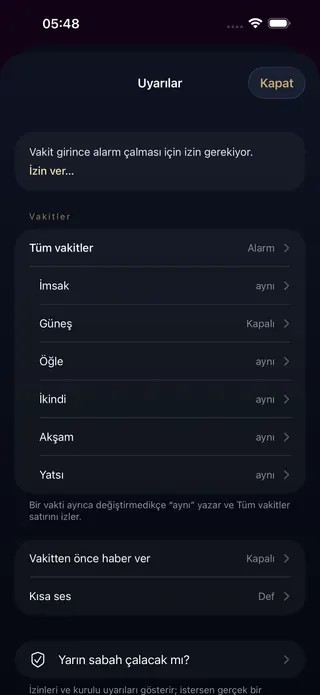
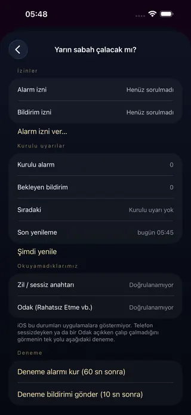
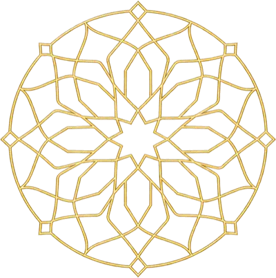
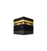
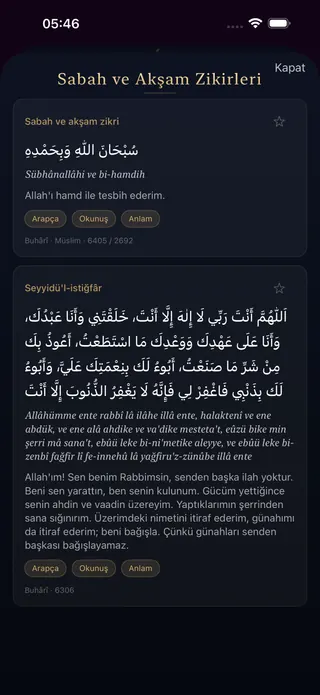
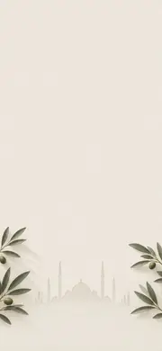

Türkiye’de namaz vakitleri bulunduğun ilçenin Diyanet takvimine göre, yurt dışında bulunduğun yere göre, Diyanet İşleri Başkanlığı’nın yöntemiyle hesaplanır. Hesap telefonunda yapılır; internet gerekmez.
Konum izni vermek zorunda değilsin; vermezsen yerini listeden seçebilirsin.
Şekil 2 Şematik çizim: imsak ve yatsı, güneşin ufkun altındaki açısına göre belirlenir.
IIVakit alarmı
Vakit girince alarm, istersen öncesinde hatırlatma
İlk açılışta hangi vakitlerde haber verileceğini seçersin; altı vaktin hepsi işaretli gelir. Her vakit için ayrı seçersin: alarm, kısa ses, ses yok ya da kapalı. Sabah namazı uyarısını imsakta ya da imsaktan 20, 30, 45 veya 60 dakika sonra alabilirsin. İstersen vakitten 5, 10, 15 ya da 30 dakika önce de bir bildirimle haber verir; alarmda bir 10 dk sonra düğmesi de açabilirsin.
Uyarı sesini 16 ses arasından seçersin: Ezan, altı kısa bildirim sesi, şadırvan, dere, kuş, bülbül, yağmur ve dalga gibi doğa sesleri ya da tesbih; varsayılan kısa bir bildirim sesidir. Ezan yalnız öğle, ikindi, akşam ve yatsı vakti girince çalar; İmsak ve Güneş uyarısında ve vakitten önceki hatırlatmada telefonun kendi sesi duyulur. Uygulamada tam ezan kaydı yoktur; “Ezan” adlı ses, bir ezan kaydının açılışındaki tekbirden alınmış 8 saniyelik kısa bir kesittir.
“Yarın sabah çalacak mı?” ekranında izin durumunu ve sıradaki planlı uyarıyı görürsün; deneme alarmı da kurabilirsin. Odak ya da Rahatsız Etmeyin açıkken bildirimler sessiz gelir.
Alarmlarda, bildirimlerde ve widget’larda reklam yoktur.


Şekil 3 Solda Uyarılar, sağda “Yarın sabah çalacak mı?” ekranı.
IIIWidget’lar
Uygulamayı açmadan sıradaki vakit
Kilit ekranında iki widget yan yana tek şerit olur: solda İmsak, Güneş ve Öğle, sağda İkindi, Akşam ve Yatsı; sıradaki vakit kalın yazılır. Saatin üstündeki tek satırlık widget sıradaki vakte kalan süreyi gösterir.
Ana ekranda küçük, orta ve büyük boyda widget: sıradaki vakit, kalan süre ve günün altı vakti. Alarm çalarken kilit ekranında, Dinamik Ada’lı iPhone’larda Dinamik Ada’da da vakit kartı görünür.
Widget’lar vakti uygulamayla aynı hesapla, telefonunda gösterir; internet gerekmez.
Uygulamayı bir kez açıp ilk kurulumu bitirince vakitler widget’ta görünür.
Şekil 4 Şematik çizim: kilit ekranında tek satırlık widget ve yan yana iki widget’tan oluşan vakit şeridi. Sıradaki vakit kalın, altında nokta.
IVKıble
Kıble pusulası
Telefonunu çevir, Kâbe’yi tepeye getir; yönü bulduğunda titreşimle haber verir. Kıble yönü de telefonunda, internetsiz hesaplanır.


Şekil 5 Çizim: iğne tepedeki Kâbe’yi gösterir.
VDualar
Kaynağıyla, künyesiyle dualar
80 dua; Arapçası, okunuşu ve anlamıyla. Her gün bir günün duası; Cuma, Ramazan, Kadir Gecesi, Kurban Bayramı ve arefesi gibi günlere özel dualar. Kandiller ve diğer dini günler adıyla görünür.
Dualar hadis kaynaklıdır.
Her duanın altında künyesi yazar.

Şekil 6 Dualar: Arapça metin, okunuş ve anlam; altında künyesi.
VITemalar
23 tema, hepsi ücretsiz
Gece mavisinden traverten avluya, ekranı zevkine göre giydir. Temaların hiçbiri ücretli değildir.
Çini Gecesi
Sedir Vadisi
Ay Suyu
Bazalt
Traverten Avlu

Keten ve Zeytin
Şekil 7 Temalardan altısının arka planı.ve daha fazlası, örneğin: Hat · Koyu Stüdyo · Aydınlık · Yüksek Kontrast · Gece Seher · Minimal · Ramazan · Kandil
Özen
Sessiz ilkeler
Hesap yok
Senden hesap, ad ya da e-posta istemez.
İnternetsiz
Vakitler, vakit alarmı, widget’lar ve kıble telefonunda hesaplanır ve internetsiz çalışır.
Konum yalnız vakit için
Konumun vakit ve kıble hesabı için telefonunda kullanılır; reklama eklenmez.
Kişiselleştirilmemiş reklam
Giderleri karşılamak için ana ekranın altında küçük bir reklam, Dualar, Günün Duası ve Temalar ekranına girerken en çok 3 dakikada bir tam ekran reklam gösterilir. Alarmlarda, bildirimlerde ve widget’larda reklam yoktur.
Diyanet İşleri Başkanlığı’nın yöntemiyle (imsak 18°, yatsı Türkiye’de 17°, yurt dışında ülkeye göre değişir; temkin uygulamalı), telefonunda hesaplanır. Diyanet bir ilçenin takvimini o ilçedeki tek bir nokta için yayınlar. Türkiye’de uygulama bulunduğun ilçeyi ilçe sınırından bulur ve vakti o ilçenin takviminin noktasında hesaplar; bu noktaları Diyanet’in yayınladığı vakitlerden çıkardık. 869 bölgenin takvimini 396 gün karşılaştırdığımızda vakitlerin %98’i aynı dakika çıktı; kalanında fark 1 dakikaydı ve ihtiyatlı yöndeydi (imsak ve güneş erken, diğer vakitler geç).
İlçe sınırına yakınsan telefonun konumu komşu ilçeyi gösterebilir; o zaman komşu ilçenin takvimi gelir. Yurt dışında vakit bulunduğun yerin koordinatına göre hesaplanır; özellikle yaz aylarında Diyanet takviminden fark daha büyük olabilir; bu günler uygulamada “tahmini” diye işaretlenir.
Buradayız
Destek
Soru, öneri ya da yanlış gördüğün bir vakit için bize yaz:
Uygunsuz bir reklam görürsen ana ekrandaki reklamın üstündeki Bildir bağlantısını ya da Menü → Ayarlar → Reklam → Son reklamı bildir satırını kullan, ya da bize yaz; inceleyip engelleriz.
Alarm çalmıyorsa
Uygulamada Menü → Uyarılar → Yarın sabah çalacak mı? ekranını aç. İzin durumunu ve sıradaki planlı uyarıyı orada görürsün; deneme alarmı da kurabilirsin.
iPhone Ayarlar → Ezan Saati Uygulaması altında bildirim ve alarm izinlerinin açık olduğunu kontrol et.
Bir Odak modu (Uyku, İş vb.) açıksa Ezan Saati Uygulaması’nın o modda izinli olduğundan emin ol.
Sık sorulanlar
Konum izni vermek zorunda mıyım?
Hayır. Konum izni vermek zorunda değilsin; vermezsen yerini listeden seçebilirsin. Vakit ve kıble hesabı telefonunda yapılır; konumun reklama eklenmez.
Hesap açmam gerekiyor mu?
Hayır. Ezan Saati Uygulaması senden hesap, ad ya da e-posta istemez.
İnternet olmadan çalışır mı?
Evet. Vakitler, vakit alarmı ve kıble telefonunda hesaplanır ve internetsiz çalışır.
Reklam nerede görünür?
Giderleri karşılamak için iki yerde kişiselleştirilmemiş reklam gösterilir: ana ekranın altında küçük bir banner ve Dualar, Günün Duası ya da Temalar ekranına girerken en çok 3 dakikada bir tam ekran reklam. Reklam o an hazır değilse ekran beklemeden açılır. Uygulama açılırken, Kıble’de, tema seçip onayladığında ve uygulamayı alarmdan ya da bildirimden açtığında tam ekran reklam çıkmaz. Alarmlarda, bildirimlerde ve widget’larda reklam yoktur. Avrupa Ekonomik Alanı, Birleşik Krallık ve İsviçre’de reklamlardan önce Google’ın izin formu çıkar; seçimini Menü → Ayarlar → Reklam → Reklam gizlilik seçenekleri satırından değiştirebilirsin. Uygunsuz bir reklam görürsen ana ekrandaki reklamın üstündeki Bildir bağlantısını ya da Menü → Ayarlar → Reklam → Son reklamı bildir satırını kullan, ya da bize yaz.
Widget nasıl eklenir?
Kilit ekranı için kilit ekranını basılı tut, Özelleştir’e dokun, saatin altındaki alana Ezan Saati Uygulaması’nın “Sabah vakitleri” ve “Akşam vakitleri” widget’larını yan yana ekle; saatin üstündeki satıra “Sıradaki vakit”i koyabilirsin. Ana ekran için boş bir yeri basılı tut, Düzenle → Widget Ekle’ye dokun ve “Namaz vakitleri”ni seç. Widget’ta “Vakitler için uygulamayı aç” yazıyorsa uygulamayı bir kez açıp ilk kurulumu bitir; telefon yeniden başladıysa kilidi bir kez açınca vakitler gelir.
Sabah namazı uyarısı ne zaman gelir?
Sabah namazının vakti imsakla girer; uyarı varsayılan olarak imsakta gelir. Menü → Uyarılar’daki İmsak satırından imsaktan 20, 30, 45 ya da 60 dakika sonrasını seçebilirsin. Diyanet ayrı bir “sabah ezanı saati” yayınlamadığı için uygulama böyle bir saat göstermez; dakikayı sen seçersin.
Ezan sesi var mı?
Tam ezan kaydı yoktur. Uyarı sesleri arasındaki “Ezan”, bir ezan kaydının açılışındaki tekbirden alınmış 8 saniyelik kısa bir kesittir. Ezan yalnız öğle, ikindi, akşam ve yatsı vakti girince çalar; İmsak ve Güneş uyarısında ve vakitten önceki hatırlatmada telefonun kendi sesi duyulur. Varsayılan uyarı sesi kısa bir bildirim sesidir; istersen Ezan’ı, öteki bildirim seslerinden birini, doğa seslerinden birini ya da tesbih sesini seçebilirsin.
Vakitler ilçe takviminden farklı olabilir mi?
Türkiye’de vakit bulunduğun ilçenin Diyanet takvimine göre hesaplanır; karşılaştırdığımız günlerde vakitlerin %98’i aynı dakika çıktı, kalanında fark 1 dakikaydı (imsak ve güneş erken, diğer vakitler geç). İlçe sınırına yakınsan telefonun konumu komşu ilçeyi gösterebilir; o zaman komşu ilçenin takvimi gelir. Yöntemin ayrıntısı
Diyanet’in resmî uygulaması mı?
Hayır. Ezan Saati Uygulaması, Diyanet İşleri Başkanlığı ile resmî bir bağı olmayan bağımsız bir uygulamadır. Vakitler Diyanet İşleri Başkanlığı’nın yöntemiyle hesaplanır.
Ezan Saati Uygulaması
Vakitler, vakit alarmı ve kıble telefonunda; hesap yok, internet gerekmez.